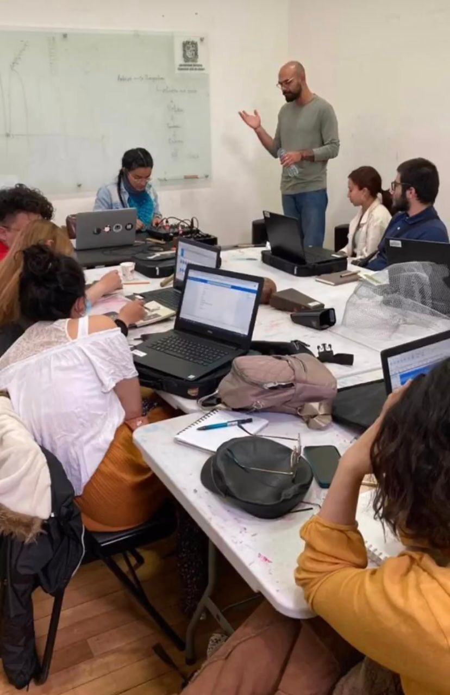
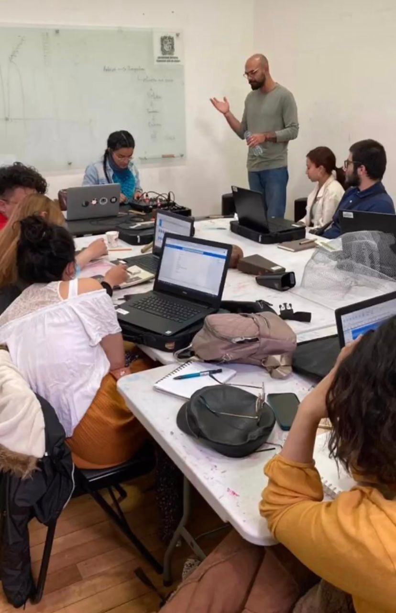

Art, Science and Technology in Knowledge Management workshop
Data on water sources, soils and wetlands in Bogotá translated into audiovisual media using programming languages and free software such as Supercollider and P5.
Data sonification is a fascinating process that involves converting data into sound and visuals to make information more accessible, especially in fields where visual analysis alone may be limited or inadequate. This can be particularly useful in environments where the data is complex or spans long periods of time, such as in environmental studies, traffic monitoring, or even in the financial sector to analyze market trends.
Key Concepts of Sonification
Direct Mapping: Data values are mapped directly to sound frequencies. For example, in a temperature data set, higher temperatures could be represented with higher pitches.
Parameter Modeling: The data modulates sound parameters such as timbre, dynamics, rhythm, or volume. For example, wind speed data could control the speed of a beat or the intensity of an ambient sound.
 
ASAB Facutad de artes. Bogotá

ASAB Facutad de artes. Bogotá